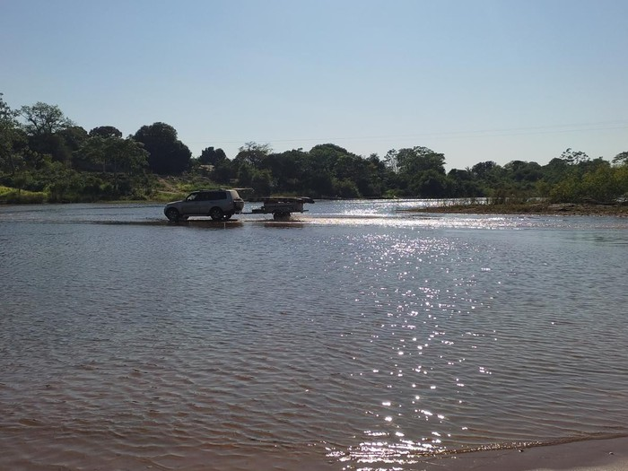

Aldeia Kanuanã

O presente trabalho pretende perceber a realidade vivida pelos indígenas da comunidade Kanuanã no Estado do Tocantins. Tendo como foco principal a infância e os processos de escolarização, pretendo apresentar de forma sucinta como estes aprendizados são realizados através da interculturalidade. Também, perceber as diferenças existentes entre o mundo dos brancos e o mundo dos indígenas, a forma de educabilidade realizada na aldeia, seja ela na escola indígena ou através das trocas sociais em contraponto com a Fundação Bradesco que está em constante contato com a comunidade. As normas e regulamentações, órgãos de diferentes instâncias, que amparam e regem esta etnia, até que ponto elas podem ser vistas como um aspecto positivo para as famílias que residem na aldeia. Através dos autores estudados, cito as divergências que a modernidade trouxe para esta comunidade e a rapidez das transformações oriundas deste processo de globalização. A cultura indígena, a sociabilidade, a educação e a infância são problematizadas e analisadas no estudo.
Voltar